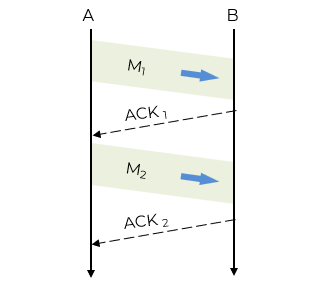
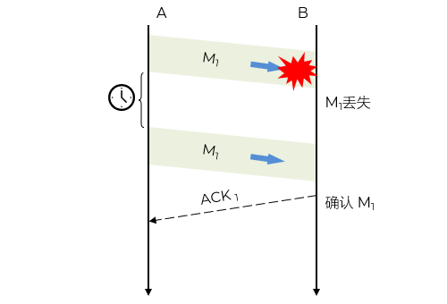
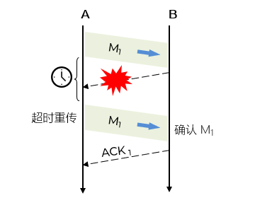
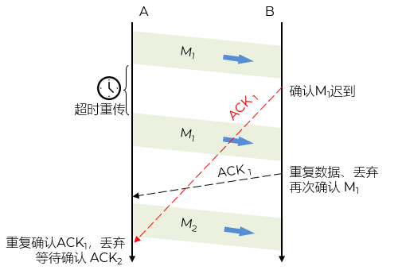

A 发送完分组 M1 后就暂停发送，等待 B 的确认 (ACK)
B 收到 M1 向 A 发送 ACK
A 在收到了对 M1 的确认后，就再发送下一个分组 M2

如果：B 没有收到M1或者收到的M1经过检测是错的，那么就丢掉，不发任何消息
所以：A 收不到 B 的回复/确认
A 为每一个已发送的分组设置一个超时计时器
A 只要在超时计时器到期之前收到了相应的确认，就撤销该超时计时器，继续发送下一个分组 M2 - 节流
A 在超时计时器规定时间内没有收到 B 的确认，就认为分组错误或丢失，就重发该分组

B 所发送的对 M1 的确认丢失了，那么 A 在设定的超时重传时间内将不会收到确认，因此 A 在超时计时器到期后重传 M1
假定 B 正确收到了 A 重传的分组 M1。这时 B 应采取两个行动：
1.丢弃这个重复的分组 M1，不向上层交付
2.向 A 发送确认

B 对分组 M1 的确认迟到了，因此 A 在超时计时器到期后重传 M1
B 会收到重复的 M1，丢弃重复的 M1，并重传确认分组
A 会收到重复的确认。对重复的确认的处理：丢弃
